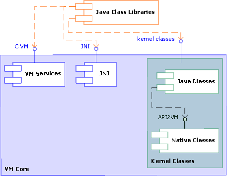
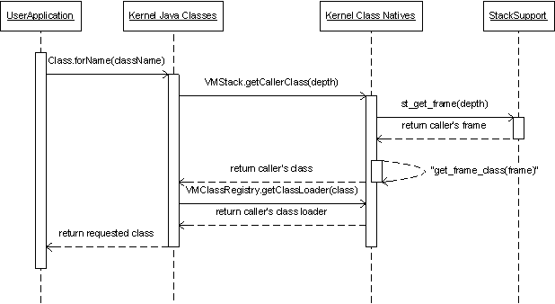

This document is targeted at developers of the DRL kernel classes. The document describes the kernel classes’ internal design and interaction with the DRL virtual machine. The information can be helpful for future development of DRL kernel classes and can serve as an example for those implementing the kernel classes’ interface from scratch.
The target audience for the document includes a wide community of engineers interested in using DRLVM and in working further with the product to contribute to its development. The document assumes that readers understand the kernel classes’ concept [1].
This document uses the unified conventions for the DRL documentation kit.
Kernel classes serve as glue between Java class
libraries (JCL) and native VM code. These are Java
API classes, members of which use or are used by the virtual machine.
Examples of kernel classes include java.lang.Object and
java.lang.reflect.Field. Because they have data on the VM
internals, the kernel classes are delivered with the VM.
This part of the document describes the internal structure of the DRLVM Kernel Classes component.
In DRLVM, kernel classes export the kernel classes interface for interaction with JCL. The kernel classes make part of the VM core and use its internal structures and interfaces to interact with other VM components, namely, the garbage collector, class support, stack support, exception handling, and object layout support.
The DRL kernel classes component consists of the kernel class natives and the kernel Java classes with an internal interface, API2VM, linking the two tiers, as shown in Figure 1. The current implementation of the kernel Java classes is based on the Harmony Class Library Porting Documentation [1] with the amendments described in section 7. DRL Kernel Specifics. This implementation is aimed at reducing porting effort of Java APIs to different virtual machines. The kernel class natives also use the thread management functionality. The interaction between the kernel classes and VM components is based on specific internal interfaces of the virtual machine.
Note
The current implementation of kernel class natives is based on JNI and
uses JNI functions. As a result, kernel class native functions are
exported as ordinary native methods from the VM executable as
specified by the JNI specification [2]. For
example, when the VMThreadManager Java
class from the kernel classes component defines the method
static native Thread currentThread(), the kernel class
native interface implements the function
Java_java_lang_VMThreadManager_currentThread().

Figure 1: Kernel classes in DRL Architecture
DRL kernel classes fully comply with the Harmony Kernel classes documentation [1] with the exceptions listed in section 7. DRL Kernel Specifics.
Currently, the kernel class natives component consists of the following:
Example
jobject
Java_java_lang_VMThreadManager_currentThread(JNIEnv *jenv, jclass)
{
return thread_current_thread();
}
Example
For method VMClassRegistry.findLoadedClass(String name,
ClassLoader loader), the wrapper checks the loader
parameter and determines further activities. If this parameter
has a non-null value, the corresponding class loader is used for
class lookup. If it is null, the Java
execution stack is examined in order to obtain context class
loader if any, otherwise the system class loader is used.
java.lang.Throwable. When a Java* exception object is created, this mechanism
prepares and stores the snapshot of the stack trace; this is
a fast operation.java.lang.StackTraceElement array) are only
performed when the exception data is actually required, for
example when the printStackTrace() method of the
Throwable class is called.
java.lang.reflection package [3].java.lang.Object type and the VM internal type
representation required for operations with fields and
methods. This mechanism also communicates with the JIT or the
interpreter to perform the actual execution of methods.
java.lang.Thread and
java.lang.reflect.Field, with the corresponding
VM internal data structures. When the classes are loaded, the
VM class support component adds the fields to the classes,
and the kernel class natives component uses the fields to
store the links to the corresponding VM internal data. Note
that these fields are not accessible from Java* code.
VMDebug allows printing messages to the standard
output before printing can be done through the
java.lang.System.out/err channel.
The API2VM internal interface is used to access VM-specific
information, which is not directly available on the Java* level and provides external data to the VM. For
example, API2VM includes the method
VMClassRegistry.defineClass() for defining new classes.
The internal interface does the following:
java.lang.VM* classes.
The API2VM internal interface includes the following:
java.lang.Compiler
java.lang.VMClassRegistry
java.lang.VMExecutionManager
java.lang.VMMemoryManager
java.lang.VMThreadManager
java.lang.reflect.VMReflection
org.apache.harmony.vm.VMStackreferent field of the
java.lang.ref.Reference class
intern() method of the
java.lang.String class
Constructor(Object obj),
Method(Object obj) and Field(Object obj)
and getHandle() method of classes
java.lang.reflect.Constructor,
java.lang.reflect.Method, and
java.lang.reflect.Field
StackTraceElement of the
java.lang.StackTraceElement
Out of these methods, the majority is package-private. The exceptions
consist of the class java.lang.Compiler declared as
public in the spec and another commonly accessed class
org.apache.harmony.vm.VMStack.
This section illustrates the role of kernel classes in the interaction between user applications code and the virtual machine. The section aims to demonstrate internal processes going on inside the kernel classes component during this interaction.

Figure 2: Operation of Kernel Classes
Figure 2 shows an example of kernel classes in action. In this
example, a user application needs to get a Class object
by the full class name, which involves the VM kernel classes. This
request goes through the following stages:
Class.forName(className) method.
Class calls
the native VMStack.getCallerClass() method to
get the caller’s Class object.
getCallClass() functionality calls the
st_get_frame(depth) interface function of the
stack support VM core component to get the stack frame
representation for the specified depth. The kernel classes
use this frame to retrieve the Class object
corresponding to it.
getCallerClass() method.
VMClassRegistry.getClassLoader(class) method.
Class
object.
Class object,
the VM kernel classes component loads the requested class to the
application.
The current implementation of the Kernel Java classes interface in DRLVM contains certain specifics due to incomplete specifications or inter-package dependencies.
java.lang.System is a kernel class or not. The DRL
implementation provides this class as kernel.
java.lang.ref.ReferenceQueue specification. The
DRL implementation provides the whole java.lang.ref
package.
java.lang.Class.getStackClasses() method does not
completely correspond to the Harmony Class Library Porting
Documentation:
stopAtPrivileged is TRUE, the
method adds two frames to the bottom of the resulting array,
so that the caller of the privileged frame is the last
included frame.
java.lang.Class.getStackClasses(). This copy
method
org.apache.harmony.vm.VMStack.getClasses() is
used in java.lang.security.AccessController and
has public visibility.
com.ibm.oti.vm.VM does not
include VM initialization methods.
com.ibm.oti.vm.VM.shutdown() method is not called upon
VM shutdown. Instead, API2VM provides an alternative shutdown
cleanup mechanism. The implementation closes opened connections and
deletes temporary files on exit.
[1] Harmony Class Library Porting Documentation, http://svn.apache.org/viewcvs.cgi/ *checkout*/harmony/enhanced/classlib/trunk/doc/kernel_doc/html/index.html
[2] Java Native Interface Specification, http://java.sun.com/j2se/1.5.0/docs/guide/jni/spec/jniTOC.html
[3]Java API Specification, http://java.sun.com/j2se/1.5.0/docs/api
* Other brands and names are the property of their respective owners.